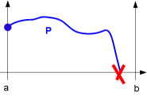
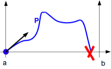

∀x ∈ ]a, b[, P >
0
We replace it by the conjunction of:
- not(∃x
∈
]a, b[, P = 0) P keeps the same sign over
]a, b[ (i.e. as P is continuous, it is the same than P has no zero in ]a, b[)
- and the disjunction of: (P has a behaviour in a
such that P is stricly positive over ]a, b[)
- (P(a) > 0)

- [P(a) = 0 and P'(a) > 0]

- [P(a) =
P'(a) = 0 and P''(a) > 0]
- ...
- or [P(a) = P'(a) = ... = P(d°P-1)(a)
= 0 and P(d°P)(a) > 0]